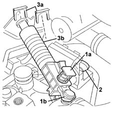
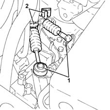
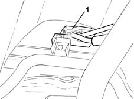
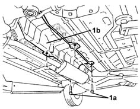
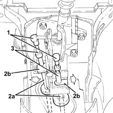
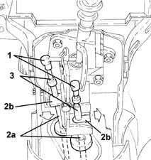
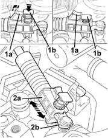
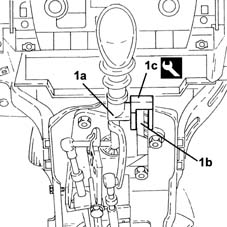

2125C30 gear engagement cable - r r
- Path
- Procedures > 21 GEARBOX > 2125 MANUAL GEARBOX EXTERNAL CONTROLS > 2125C manual gearbox external control (cables) > 2125C30 gear engagement cable - r r
- Kind
- repair procedure (removal / refitting; the operation number is the code)
- Applies to
- all engines; all production periods
- Interactive page
- https://sloeber94.github.io/elrnDB-lYpsln/en/#/2429130
Applies to: engines: 1.2 8v, 1.2 16v, 1.4 16v; all production periods
 Removing
Removing
 Refitting
RefittingPosition the vehicle on the ramp.
Proceed with removal 5530B10 battery - r+r .
Proceed with removal 5530B52 Battery DRIP TRAY/SUPPORT - R.R. .
1. Press the release button (1a) and disconnect the gear selector cable (1b).
2. Disconnect the gear engagement cable.
3. Remove the clips (3a) and release the gear selector and engagement cables (3b) from the mounting bracket.

Applies to: engines: 1.3 JTD; all production periods
Removing
RefittingPosition the vehicle on the ramp.
Proceed with removal 5530B10 battery - r+r .
Proceed with removal 5530B52 Battery DRIP TRAY/SUPPORT - R.R. .
1. Disconnect the gear engagement/selector cables.
2. Remove the stops and release the gear engagement/selector cables from the mounting bracket.

Applies to: engines: 1.2 8v, 1.2 16v, 1.4 16v; all production periods
1. Release the gear selector and engagement cables from the fastening on the steering box, then remove them from the engine compartment.

Applies to: engines: 1.3 JTD; all production periods
1. Release the gear selector and engagement cables from the fastening on the steering box, then remove them from the engine compartment.
Applies to: engines: 1.2 8v, 1.2 16v, 1.4 16v; all production periods
1. Undo the bolts (1a) and remove the exhaust pipe heat shield (1b).

Applies to: engines: 1.3 JTD; all production periods
Proceed with removal 7040L28 tunnel switch panel - r r .
Proceed with removal 7040L22 REAR TRIM on TUNNEL -R.R. .
Proceed with removal 7040L20 tunnel trim - r r .
Proceed with removal 7040A18 glove compartment on facia - arrange .
Proceed with removal 7040A30 Left instrument panel lower TRIM - R.R. .
Proceed with removal 2125A30 lever/knob cover - r + r .
Proceed with removal 7040A28 TRIM on gearbox control panel - R.R. .
Proceed with removal .
1. Disconnect the gear selector and engagement cables for the manual gearbox.
2. Separate the gear selector and engagement cables (2a) from the mounting releasing the clips (2b).
3. Remove the gear selector and engagement cables after haivng released the rubber mountings from the support.

Applies to: engines: 1.2 8v, 1.2 16v, 1.4 16v; all production periods
Proceed with removal 7040L28 tunnel switch panel - r r .
Proceed with removal 7040L22 REAR TRIM on TUNNEL -R.R. .
Proceed with removal 7040L20 tunnel trim - r r .
Proceed with removal 7040A18 glove compartment on facia - arrange .
Proceed with removal 7040A30 Left instrument panel lower TRIM - R.R. .
Proceed with removal 2125A30 lever/knob cover - r + r .
Proceed with removal 7040A28 TRIM on gearbox control panel - R.R. .
Proceed with removal .
1. Disconnect the gear selector and engagement cables for the manual gearbox.
2. Separate the gear selector and engagement cables (2a) from the mounting releasing the clips (2b).
3. Remove the gear selector and engagement cables after haivng released the rubber mountings from the support.

Applies to: engines: 1.3 JTD; all production periods
Refitting
RemovingPlace the gear selector and engagement cables in their housings.
Fasten the gear selector and engagement cables to the mounting using the clips.
Connect the gear selector and engagement cables to the manual gearbox control lever.
Fit the gear selector and engagement cables in the engine compartment and fasten the band to the steering box.
Secure the gear engagement/selector cables to the mounting bracket with the stops.
Connect the gear engagement/selector cables.
Proceed with refitting .
Proceed with refitting 7040A28 TRIM on gearbox control panel - R.R. .
Proceed with refitting 2125A30 lever/knob cover - r + r .
Proceed with refitting 7040A30 Left instrument panel lower TRIM - R.R. .
Proceed with refitting 7040A18 glove compartment on facia - arrange .
Proceed with refitting 7040L20 tunnel trim - r r .
Proceed with refitting 7040L22 REAR TRIM on TUNNEL -R.R. .
Proceed with refitting 7040L28 tunnel switch panel - r r .
Proceed with refitting 5530B52 Battery DRIP TRAY/SUPPORT - R.R. .
Proceed with refitting 5530B10 battery - r+r .
Remove the car from the ramps.
Applies to: engines: 1.2 8v, 1.2 16v, 1.4 16v; all production periods
Refitting
RemovingPlace the gear selector and engagement cables in their housings.
Fasten the gear selector and engagement cables to the mounting using the clips.
Connect the gear selector and engagement cables to the manual gearbox control lever.
Place the exhaust pipe heat shield back in its housing and secure it using the bolts.
Fit the gear selector and engagement cables in the engine compartment and fasten the band to the steering box.
Position the gear selector and engagement cables in the housings in the mounting bracket and secure them using the clips.
Connect the gear selector and engagement cables.
Adjust the gear selector cable following the instructions described below.
1. Set the self-adjustment device (quick adjuster) on the gear selector cable, by pulling the part (1a) backwards and lowering the spring guide (1b); release the part (1a) so as to hold the spring guide (1b) in position
2. Manoeuvring the gear selector lever, make sure that the device (2a) slides on the terminal (2b).

Applies to: engines: 1.2 8v, 1.2 16v, 1.4 16v; all production periods
1. Position the gear level in neutral and interpose, in the direction shown in the figure, between the reverse inhibition sleeve tooth (1a) and the support barrier (1b), the tool (1c) on the side with a thickness of 11 0.1 mm; then lock the gear lever against the tool so that the dimension does not change.
 | Name | Country |
|---|---|---|
1c | Template | 1.870.786.000 |
Release the self-adjustment device.
Release the gear lever and remove the tool.
| Name | Country |
|---|---|---|
- | Template | 1.870.786.000 |
Engage 5th gear and check that it does not stick.
if there is sticking, repeat the adjustment procedure.

Applies to: engines: 1.2 8v, 1.2 16v, 1.4 16v; all production periods
Proceed with refitting .
Proceed with refitting 7040A28 TRIM on gearbox control panel - R.R. .
Proceed with refitting 2125A30 lever/knob cover - r + r .
Proceed with refitting 7040A30 Left instrument panel lower TRIM - R.R. .
Proceed with refitting 7040A18 glove compartment on facia - arrange .
Proceed with refitting 7040L20 tunnel trim - r r .
Proceed with refitting 7040L22 REAR TRIM on TUNNEL -R.R. .
Proceed with refitting 7040L28 tunnel switch panel - r r .
Proceed with refitting 5530B52 Battery DRIP TRAY/SUPPORT - R.R. .
Proceed with refitting 5530B10 battery - r+r .
Remove the car from the ramps.
Topics linked from this page (9)
- 2125A30 lever/knob cover - r + r
- 5530B10 battery - r+r
- 5530B52 Battery DRIP TRAY/SUPPORT - R.R.
- 7040A18 glove compartment on facia - arrange
- 7040A28 TRIM on gearbox control panel - R.R.
- 7040A30 Left instrument panel lower TRIM - R.R.
- 7040L20 tunnel trim - r r
- 7040L22 REAR TRIM on TUNNEL -R.R.
- 7040L28 tunnel switch panel - r r